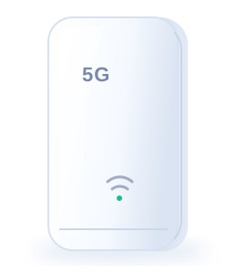

C2000MAX · V37.01
你好，
一切正常运行
CPE 已稳定运行 2 天 14 小时
5G SA 已连接Wi-Fi 运行中
更快的连接
成就更好的生活
成就更好的生活

在线运行状态良好
- 网络类型
- 5G 已连接
- 运营商
- 中国移动
- IP 地址
- 112.96.186.24
- 运行时间
- 2 天 14 小时
信号强度
5G信号强度优秀
RSRP−86 dBm
RSRQ−9 dB
SINR18 dB
- 当前 SIM 卡
- SIM 1
- 运营商
- 中国移动
- 网络类型
- 5G SA
- 信号强度
- ▮▮▮▮▯ 优秀
- IMSI
- 460001••••7890
- ICCID
- 898600••••0123
2.4 GHz开启
5 GHz开启
MLO可选关闭
在线终端 8 台
实时速率
下行 上行下载速率356 Mbps
上传速率78 Mbps
6004002000
14:5014:5515:0015:0515:1015:15
流量统计
本日流量12%
12.8 GB/ 100 GB
本月流量28%
286 GB/ 1 TB
下行 245 GB 上行 41 GB
已连接设备
8- ▣MacBook Pro5 GHz · 2 小时前192.168.1.101
- ▯iPhone 155 GHz · 1 小时前192.168.1.102
- ▯iPad Air5 GHz · 3 小时前192.168.1.103
- ▣Windows PC有线 · 5 小时前192.168.1.104
- ▣智能电视5 GHz · 6 小时前192.168.1.105
快捷入口
网络接口 无线设置 流量统计 设备管理正式主题将保留全部 LuCI 菜单及已安装插件入口